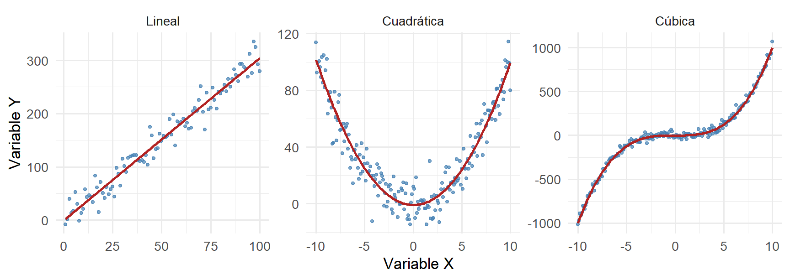
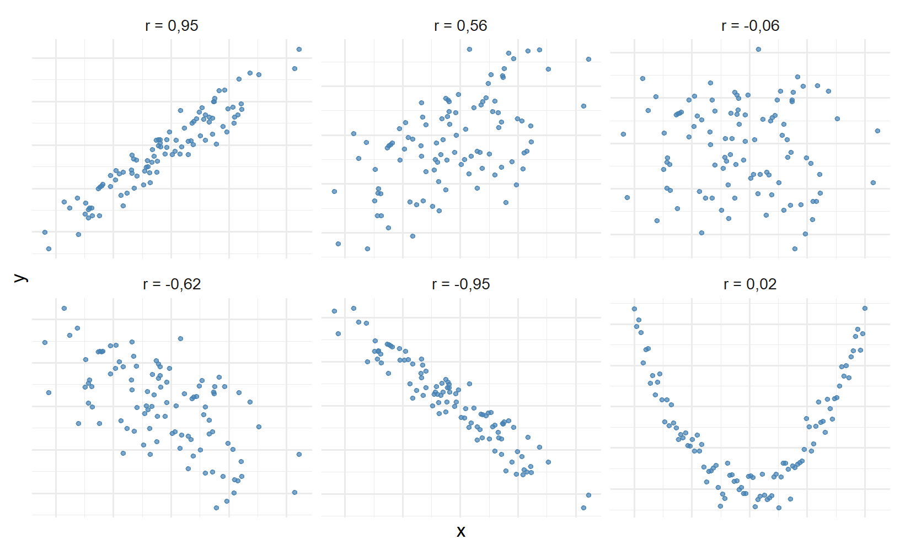
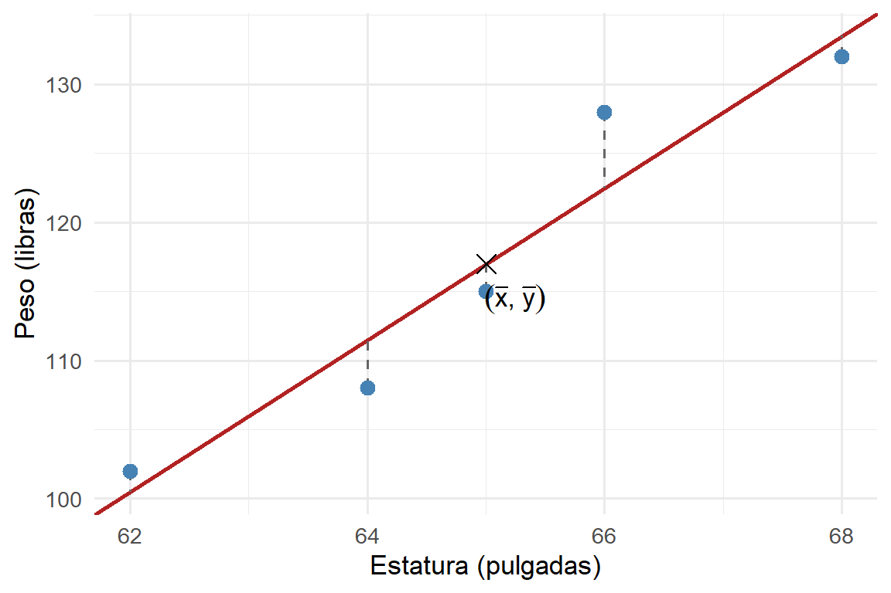
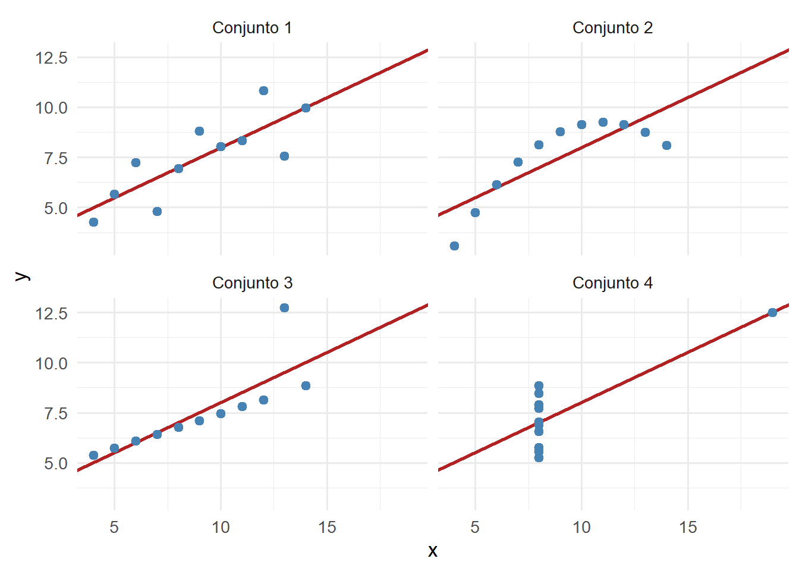
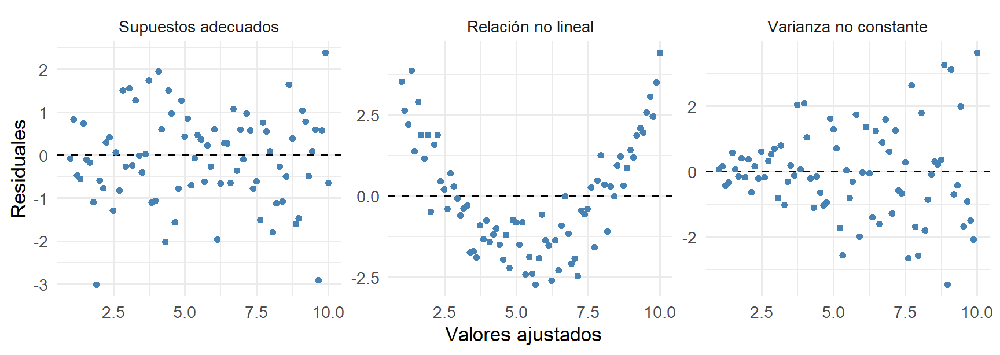
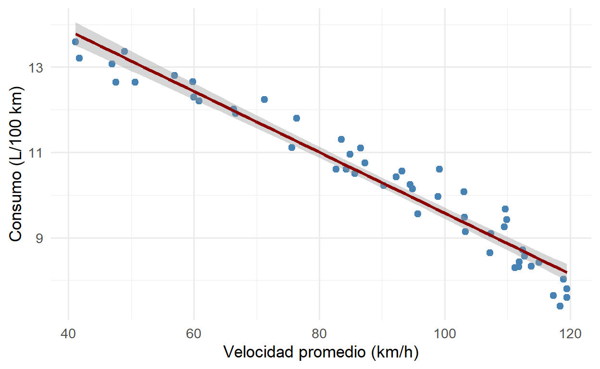
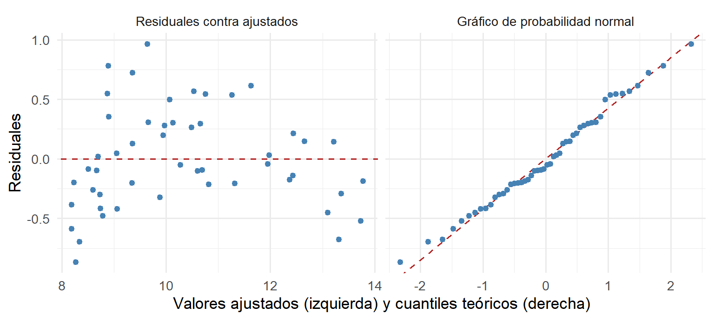

library(faraway)
data(pima)
summary(pima)
sort(pima$diastolic) # aparecen muchos ceros
pima$diastolic[pima$diastolic == 0] <- NA # los ceros son datos perdidos
hist(pima$diastolic)
plot(density(pima$diastolic, na.rm = TRUE))
boxplot(diastolic ~ test, data = pima) # gráfico bivariadoCapítulo 3: Regresión lineal simple
Objetivos del capítulo
Al terminar este capítulo, usted estará en capacidad de:
- comprender el propósito de la regresión lineal como herramienta para analizar y predecir la relación entre variables cuantitativas;
- identificar situaciones reales en las que es apropiado un modelo de regresión;
- reconocer las etapas de un análisis de regresión: formulación del problema, recolección de los datos y análisis inicial;
- interpretar gráficamente la relación entre dos variables mediante diagramas de dispersión, y medir su asociación lineal con el coeficiente de correlación;
- estimar los coeficientes de un modelo de regresión lineal simple por mínimos cuadrados e interpretarlos;
- medir la bondad del ajuste con el coeficiente de determinación;
- hacer inferencia sobre los coeficientes y predicciones con el modelo;
- verificar los supuestos del modelo mediante el análisis de residuales;
- ajustar e interpretar un modelo de regresión con R.
1 ¿Qué es la regresión?
En los capítulos anteriores estudiamos una variable a la vez: estimamos su media o su varianza y probamos hipótesis sobre ellas. Pero muchas de las preguntas más interesantes involucran la relación entre variables: ¿cuánto aumentan las ventas por cada millón invertido en publicidad?, ¿cómo cambia el consumo de combustible de un vehículo con la velocidad?, ¿qué peso se espera en una persona de cierta estatura?
Definición 1 (Regresión) La regresión es una técnica estadística que permite modelar y analizar la relación entre una variable dependiente (o variable respuesta) y una o más variables independientes (o variables predictoras, explicativas o regresoras), con el fin de describir esa relación y de predecir la variable dependiente a partir de las demás.
Existen varios tipos de regresión, según la naturaleza de los datos y el objetivo del análisis: la regresión lineal, la más básica y común, que estudiaremos en este capítulo y el siguiente; la regresión polinómica, para relaciones curvas; la regresión logística, cuando la variable respuesta es binaria (sí o no); la regresión de Poisson, cuando es un conteo; y las regresiones no paramétricas, como las basadas en splines, que no imponen una forma a la relación (Montgomery et al., 2012, pp. 236, 421).
La regresión lineal tiene aplicaciones en prácticamente todas las áreas del conocimiento (Tabla 1).
| Área | Ejemplos de relaciones que se modelan |
|---|---|
| Economía | Consumo de los hogares según el ingreso; inflación y desempleo |
| Negocios y mercadeo | Ventas según la inversión en publicidad; demanda según el precio |
| Ciencias sociales | Nivel educativo y criminalidad; estrés y rendimiento cognitivo |
| Salud y epidemiología | Dosis de un fármaco y efecto clínico; pobreza y mortalidad infantil |
| Ingeniería | Temperatura y resistencia de un material; desgaste de un equipo según sus ciclos de uso |
| Ciencias ambientales | Lluvias y caudal de un río; concentración de contaminantes y enfermedades respiratorias |
| Educación | Horas de estudio y calificación |
2 El análisis de regresión paso a paso
“La formulación de un problema es a menudo más importante que su solución, la cual puede ser simplemente una cuestión de habilidad matemática o experimental.” — Albert Einstein
Un análisis de regresión no empieza ajustando un modelo. Es un error de principiante iniciar un análisis sin tener claros los objetivos, e incluso sin saber si los datos son apropiados para el análisis (Faraway, 2002, p. 8). Antes de estimar cualquier coeficiente conviene recorrer tres etapas.
1. Formulación del problema. Para formular el problema correctamente hay que comprender el contexto del fenómeno que se estudia, entender el objetivo del análisis, asegurarse de saber qué quiere quien hizo la pregunta y, finalmente, plantear el problema en términos estadísticos: ¿cuál es la variable respuesta?, ¿cuáles las posibles explicativas?, ¿se busca explicar o predecir?
2. Recolección de los datos. Es importante saber cómo se obtuvieron los datos. ¿Son experimentales u observacionales? ¿La muestra es de conveniencia o se obtuvo con alguna técnica de muestreo probabilístico? ¿Hay valores perdidos? ¿Hay variables codificadas? ¿Cuáles son las unidades de medida? ¿Puede haber errores de registro? Los datos para una regresión se obtienen, básicamente, de tres formas: un estudio retrospectivo, que usa registros históricos ya existentes; un estudio observacional, en el que se observan las variables sin intervenir en ellas; y un experimento diseñado, en el que el investigador fija deliberadamente los valores de las variables independientes. Solo en el último se puede hablar con seguridad de relaciones causa-efecto.
3. Análisis inicial de los datos. Es un paso muy importante, y con frecuencia omitido: calcular las medidas descriptivas de Estadística I y hacer gráficos de cada variable y de cada par de variables, buscando algo inusual o inesperado, como valores atípicos o errores de digitación.
Ejemplo 1 El paquete faraway de R contiene el conjunto de datos pima, de un estudio sobre diabetes realizado a 768 mujeres adultas del pueblo indígena Pima, en Estados Unidos (Faraway, 2002, p. 9). Entre sus variables están el número de embarazos (pregnant), la concentración de glucosa en la sangre dos horas después de ingerir una solución de glucosa (glucose), la presión arterial diastólica (diastolic, en mmHg), el índice de masa corporal (bmi), la edad (age) y el resultado de una prueba de diabetes (test, 0 = negativo, 1 = positivo).
Al revisar el resumen descriptivo con summary(pima) aparecen cosas inesperadas. El máximo de embarazos es 17: grande, pero no imposible. En cambio, el mínimo de la presión diastólica es 0, lo que no es posible en una persona viva. Al ordenar los valores con sort(pima$diastolic) se ve que hay varios ceros: el cero se usó para codificar los valores perdidos. Si no se detecta, cualquier análisis posterior quedaría distorsionado. La solución es reemplazarlos por NA, el código de R para los datos faltantes:
3 Diagramas de dispersión
El primer paso para estudiar la relación entre dos variables cuantitativas es graficarla. En un diagrama de dispersión, cada unidad de observación se representa con un punto cuya coordenada horizontal es el valor de la variable independiente \(x\) y cuya coordenada vertical es el valor de la variable dependiente \(y\). El diagrama permite ver la forma de la relación (lineal o curva), su dirección (creciente o decreciente), su fuerza (qué tan cerca de la curva están los puntos) y la presencia de valores atípicos.
La Figura 1 muestra tres relaciones con datos simulados en R: una lineal, una cuadrática y una cúbica. La regresión lineal simple de este capítulo es adecuada para la primera; para las otras dos se necesitarían modelos polinómicos.

El código para simular y graficar la relación lineal es:
set.seed(123)
x <- 1:100
y <- 3 * x + rnorm(100, mean = 0, sd = 20)
df <- data.frame(x, y)
ggplot(df, aes(x = x, y = y)) +
geom_point(color = "steelblue") +
geom_smooth(method = "lm", se = TRUE, color = "darkred") +
labs(title = "Diagrama de dispersión", x = "Variable X", y = "Variable Y")4 Coeficiente de correlación
El diagrama de dispersión muestra la relación; para medir qué tan fuerte es una relación lineal se usa el coeficiente de correlación.
Definición 2 (Coeficiente de correlación de Pearson) El coeficiente de correlación de Pearson de \(n\) pares de datos \((x_1, y_1), \ldots, (x_n, y_n)\) es \[ r = \frac{\sum_{i=1}^{n}(x_i - \bar{x})(y_i - \bar{y})}{\sqrt{\sum_{i=1}^{n}(x_i - \bar{x})^2}\ \sqrt{\sum_{i=1}^{n}(y_i - \bar{y})^2}} = \frac{S_{xy}}{\sqrt{S_{xx}\,S_{yy}}} , \] donde, para abreviar, \[ S_{xx} = \sum_{i=1}^{n}(x_i - \bar{x})^2, \qquad S_{yy} = \sum_{i=1}^{n}(y_i - \bar{y})^2, \qquad S_{xy} = \sum_{i=1}^{n}(x_i - \bar{x})(y_i - \bar{y}) . \]
El coeficiente de correlación cumple las siguientes propiedades (Devore, 2008, p. 487; Walpole et al., 2012, pp. 431-433):
- siempre está entre \(-1\) y \(1\);
- su signo indica la dirección de la relación: positivo si \(y\) tiende a aumentar cuando \(x\) aumenta, negativo si tiende a disminuir;
- su valor absoluto indica la fuerza de la relación lineal: \(r = \pm 1\) si todos los puntos están exactamente sobre una recta, y valores cercanos a 0 indican que no hay relación lineal;
- no tiene unidades, y no cambia si se intercambian \(x\) y \(y\) o si se cambian las unidades de medida.

Dos advertencias sobre la correlación
- Mide solo relaciones lineales. Un coeficiente cercano a 0 no significa que no haya relación, sino que no hay relación lineal. En el último panel de la Figura 2, \(y\) depende fuertemente de \(x\), pero en forma de parábola, y \(r\) es casi 0. Por eso siempre hay que mirar el diagrama de dispersión antes de calcular \(r\).
- Correlación no implica causalidad. Que dos variables estén correlacionadas no significa que una cause la otra. Las ventas de helado y los ahogamientos en piscinas están correlacionados, pero no porque los helados causen ahogamientos: ambos aumentan en verano. Una tercera variable, la temperatura, explica la relación. En general, una correlación fuerte entre \(X\) y \(Y\) puede significar que \(X\) causa \(Y\), que \(Y\) causa \(X\), o que un tercer factor causa ambas (Daniel, 1987, p. 403).
5 Modelo de regresión lineal simple
La regresión lineal simple modela la relación entre dos variables cuantitativas: una variable dependiente \(Y\) y una variable independiente \(X\). El objetivo es encontrar la ecuación de la recta que mejor describe los datos, para describir cómo cambia \(Y\) con \(X\) y para predecir \(Y\) a partir de \(X\).
Definición 3 (Modelo de regresión lineal simple) El modelo de regresión lineal simple es \[ Y = \beta_0 + \beta_1 X + \varepsilon , \] donde:
- \(Y\) es la variable dependiente, la que se quiere explicar o predecir;
- \(X\) es la variable independiente, la que se usa para explicar o predecir;
- \(\beta_0\) y \(\beta_1\) son los coeficientes de regresión, parámetros desconocidos del modelo;
- \(\varepsilon\) es el error aleatorio, que recoge la variación de \(Y\) que no explica \(X\).
El modelo dice que \(Y\) es la suma de una parte sistemática, \(\beta_0 + \beta_1 X\), que depende de \(X\), y una parte aleatoria, \(\varepsilon\), debida a todos los demás factores que influyen en \(Y\) y que el modelo no incluye. No espera que los puntos estén exactamente sobre una recta, sino que se dispersen alrededor de ella.
¿Por qué se llama lineal?
El modelo se llama lineal porque es lineal en los parámetros: \(\beta_0\) y \(\beta_1\) no aparecen como exponentes, ni multiplicados o divididos por otros parámetros. Por eso, un modelo como \(Y = \beta_0 + \beta_1 X + \beta_2 X^2 + \varepsilon\), cuya gráfica es una parábola, también es un modelo de regresión lineal (múltiple), mientras que \(Y = \beta_0 e^{\beta_1 X} + \varepsilon\) no lo es (Montgomery et al., 2012, pp. 4, 69).
5.1 Supuestos del modelo
Para cada observación \(i = 1, \ldots, n\), el modelo se escribe \[ Y_i = \beta_0 + \beta_1 x_i + \varepsilon_i , \] donde \(\varepsilon_i\) es el error de la observación \(i\), que no es observable. Los valores \(x_i\) se consideran fijos (no aleatorios). Las inferencias que haremos sobre el modelo son válidas bajo los siguientes supuestos sobre los errores (Montgomery et al., 2012, p. 12; Walpole et al., 2012, pp. 390-394):
- Media cero: \(E(\varepsilon_i) = 0\). En promedio, los errores se compensan, y la recta \(\beta_0 + \beta_1 x\) describe el valor medio de \(Y\) para cada \(x\): \(E(Y \mid x) = \beta_0 + \beta_1 x\).
- Homocedasticidad: \(V(\varepsilon_i) = \sigma^2\). Todos los errores tienen la misma varianza, cualquiera que sea el valor de \(x\).
- Normalidad: los \(\varepsilon_i\) tienen distribución normal.
- Independencia: los \(\varepsilon_i\) son independientes entre sí.
En resumen, \(\varepsilon_i \sim N(0, \sigma^2)\) independientes, o, lo que es lo mismo, para cada \(x_i\), \(Y_i \sim N(\beta_0 + \beta_1 x_i,\ \sigma^2)\). En la sección de análisis residual veremos cómo verificar estos supuestos con los datos.
5.2 Interpretación de los coeficientes
- La pendiente \(\beta_1\) es el cambio promedio en \(Y\) por cada aumento de una unidad en \(X\). Si \(\beta_1 > 0\), \(Y\) tiende a aumentar con \(X\); si \(\beta_1 < 0\), a disminuir; si \(\beta_1 = 0\), \(X\) no tiene relación lineal con \(Y\).
- El intercepto \(\beta_0\) es el valor promedio de \(Y\) cuando \(X = 0\). Solo tiene una interpretación práctica si \(X = 0\) es un valor posible y está dentro del rango de los datos; en muchos problemas, como el de la estatura y el peso, no la tiene.
6 Estimación por mínimos cuadrados
Los coeficientes \(\beta_0\) y \(\beta_1\) son desconocidos, y se estiman con una muestra de \(n\) pares de datos \((x_1, y_1), \ldots, (x_n, y_n)\). Entre todas las rectas posibles, ¿cuál es la que “mejor” se ajusta a los datos? El criterio más usado es el de mínimos cuadrados: elegir la recta que minimiza la suma de los cuadrados de las distancias verticales entre cada punto y la recta (Figura 3).
Definición 4 (Estimadores de mínimos cuadrados) Los estimadores de mínimos cuadrados \(\hat{\beta}_0\) y \(\hat{\beta}_1\) son los valores de \(\beta_0\) y \(\beta_1\) que minimizan la función \[ S(\beta_0, \beta_1) = \sum_{i=1}^{n}\big[y_i - (\beta_0 + \beta_1 x_i)\big]^2 . \]
Para encontrarlos, se deriva \(S\) con respecto a \(\beta_0\) y a \(\beta_1\) y se igualan las derivadas a cero: \[ \frac{\partial S}{\partial \beta_0} = -2\sum_{i=1}^{n}(y_i - \beta_0 - \beta_1 x_i) = 0, \qquad \frac{\partial S}{\partial \beta_1} = -2\sum_{i=1}^{n}(y_i - \beta_0 - \beta_1 x_i)\,x_i = 0 . \] Estas dos ecuaciones se conocen como ecuaciones normales. Resolviendo el sistema se obtiene el siguiente resultado.
Teorema 1 (Estimadores de mínimos cuadrados) Los estimadores de mínimos cuadrados de la pendiente y del intercepto son \[ \hat{\beta}_1 = \frac{\sum_{i=1}^{n}(x_i - \bar{x})(y_i - \bar{y})}{\sum_{i=1}^{n}(x_i - \bar{x})^2} = \frac{S_{xy}}{S_{xx}}, \qquad \hat{\beta}_0 = \bar{y} - \hat{\beta}_1\,\bar{x} . \] La ecuación de regresión estimada (o recta ajustada) es \[ \hat{y} = \hat{\beta}_0 + \hat{\beta}_1 x . \]
Notación
Para los coeficientes de regresión seguimos la costumbre de todos los textos: \(\hat{\beta}_0\) y \(\hat{\beta}_1\) denotan tanto los estimadores como las estimaciones, igual que \(\hat{p}\) en los capítulos anteriores; el contexto indica de cuál se trata. Además, \(\hat{y}_i = \hat{\beta}_0 + \hat{\beta}_1 x_i\) es el valor ajustado (o predicho) para la observación \(i\), y \[ e_i = y_i - \hat{y}_i \] es su residual: la diferencia entre el valor observado y el ajustado. Los residuales son la versión observable de los errores \(\varepsilon_i\).
Cuando se trabaja a mano, conviene calcular \(S_{xx}\) y \(S_{xy}\) con las fórmulas equivalentes \[ S_{xx} = \sum x_i^2 - n\bar{x}^2, \qquad S_{xy} = \sum x_i y_i - n\bar{x}\bar{y}, \qquad S_{yy} = \sum y_i^2 - n\bar{y}^2 . \]
6.1 Propiedades del ajuste por mínimos cuadrados
La recta de mínimos cuadrados cumple tres propiedades útiles (Montgomery et al., 2012, pp. 19-20):
- La suma de los residuales es cero: \(\sum_{i=1}^{n}(y_i - \hat{y}_i) = 0\). Es la primera ecuación normal.
- La suma de los valores observados es igual a la suma de los valores ajustados: \(\sum y_i = \sum \hat{y}_i\).
- La recta de regresión pasa por el punto de las medias \((\bar{x}, \bar{y})\), porque \(\hat{\beta}_0 + \hat{\beta}_1\bar{x} = \bar{y}\).
Ejemplo 2 Los siguientes datos son las estaturas, en pulgadas, y los pesos, en libras, de cinco nadadoras:
| Estatura (\(x\)) | 68 | 64 | 62 | 65 | 66 |
|---|---|---|---|---|---|
| Peso (\(y\)) | 132 | 108 | 102 | 115 | 128 |
Diagrama de dispersión. La Figura 3 muestra que el peso tiende a aumentar con la estatura, y que los puntos se disponen aproximadamente alrededor de una recta: hay una relación lineal positiva.
Ecuación de regresión. Con \(\bar{x} = 65\) y \(\bar{y} = 117\), los cálculos se organizan en la Tabla 3.
Tabla 3: Cálculos para la recta de mínimos cuadrados. \(x_i\) \(y_i\) \(x_i - \bar{x}\) \(y_i - \bar{y}\) \((x_i - \bar{x})^2\) \((x_i - \bar{x})(y_i - \bar{y})\) 68 132 3 15 9 45 64 108 −1 −9 1 9 62 102 −3 −15 9 45 65 115 0 −2 0 0 66 128 1 11 1 11 Suma 0 0 20 110 Entonces \(\hat{\beta}_1 = 110/20 = 5{,}5\) y \(\hat{\beta}_0 = 117 - 5{,}5 \times 65 = -240{,}5\), y la ecuación de regresión estimada es \[ \hat{y} = -240{,}5 + 5{,}5\,x . \]
Interpretación de la pendiente. Por cada pulgada adicional de estatura, el peso de las nadadoras aumenta en promedio 5,5 libras. El intercepto, \(-240{,}5\), no tiene interpretación práctica: sería el peso de una nadadora de estatura cero.
Predicción. Para una nadadora de 63 pulgadas, el peso estimado es \(\hat{y} = -240{,}5 + 5{,}5 \times 63 = 106\) libras.
Correlación. Con \(S_{yy} = 656\), \(r = 110/\sqrt{20 \times 656} = 0{,}960\): una relación lineal positiva muy fuerte.

Cuidado con extrapolar
La ecuación de regresión solo debe usarse para predecir dentro del rango de valores de \(x\) observados (aquí, de 62 a 68 pulgadas). Fuera de ese rango no hay datos que muestren que la relación siga siendo lineal, y las predicciones pueden ser absurdas: la ecuación “predice” un peso negativo para una estatura de 40 pulgadas (Daniel, 1987, p. 403; Montgomery et al., 2012, p. 4).
Ejemplo 3 Un estudio investigó la relación entre la potencia eléctrica consumida al mes por una planta química (\(y\)) y la temperatura ambiente promedio (\(x\), en grados Fahrenheit). Con \(n = 15\) meses se obtuvieron las siguientes sumas: \[ \sum x_i = 1425,\quad \sum y_i = 10{,}68,\quad \sum x_i^2 = 139\,037{,}25,\quad \sum x_i y_i = 987{,}645 . \] Con las fórmulas de cálculo, \(\bar{x} = 95\), \(\bar{y} = 0{,}712\), \[ S_{xx} = 139\,037{,}25 - 15 \times 95^2 = 3662{,}25, \qquad S_{xy} = 987{,}645 - 15 \times 95 \times 0{,}712 = -26{,}955, \] de modo que \(\hat{\beta}_1 = -26{,}955/3662{,}25 = -0{,}00736\) y \(\hat{\beta}_0 = 0{,}712 + 0{,}00736 \times 95 = 1{,}411\). La ecuación estimada es \(\hat{y} = 1{,}411 - 0{,}00736\,x\): por cada grado Fahrenheit adicional de temperatura promedio, la potencia consumida disminuye en promedio 0,00736 unidades.
En R, el modelo se ajusta con la función lm() (de linear model), indicando la fórmula y ~ x (R Core Team, 2024):
modelo <- lm(peso ~ estatura)
coef(modelo) # estimaciones de beta0 y beta1(Intercept) estatura
-240.5 5.5 predict(modelo, newdata = data.frame(estatura = 63)) # peso estimado 1
106 cor(estatura, peso) # coeficiente de correlación[1] 0.96034177 Descomposición de la variabilidad y coeficiente de determinación
Una vez ajustada la recta, interesa saber qué tan bien explica los datos. Para ello se descompone la variabilidad de \(Y\).
La variabilidad total de \(Y\) respecto a su media se mide con la suma total de cuadrados: \[ STC = \sum_{i=1}^{n}(y_i - \bar{y})^2 = S_{yy} . \] Cada desviación \(y_i - \bar{y}\) se puede escribir como la suma de dos partes: \[ \underbrace{y_i - \bar{y}}_{\text{total}} = \underbrace{\hat{y}_i - \bar{y}}_{\text{explicada por la recta}} + \underbrace{y_i - \hat{y}_i}_{\text{residual}} , \] y, aunque no es inmediato, se puede demostrar que la misma descomposición se cumple para las sumas de cuadrados (Walpole et al., 2012, p. 414):
Teorema 2 (Descomposición de la variabilidad) \[ STC = SCR + SCE, \] donde \[ SCR = \sum_{i=1}^{n}(\hat{y}_i - \bar{y})^2 \qquad \text{y} \qquad SCE = \sum_{i=1}^{n}(y_i - \hat{y}_i)^2 = \sum_{i=1}^{n} e_i^2 . \]
- La suma de cuadrados debida a la regresión, \(SCR\), mide la parte de la variabilidad de \(Y\) que explica la recta de regresión.
- La suma de cuadrados debida al error, \(SCE\), mide la parte que no explica: es la suma de los cuadrados de los residuales, la misma cantidad que minimiza el método de mínimos cuadrados.
Definición 5 (Coeficiente de determinación) El coeficiente de determinación es la proporción de la variabilidad total de \(Y\) que explica el modelo de regresión: \[ R^2 = \frac{SCR}{STC} = 1 - \frac{SCE}{STC}, \qquad 0 \le R^2 \le 1 . \]
Un \(R^2\) cercano a 1 indica que la mayor parte de la variabilidad de \(Y\) está explicada por \(X\); uno cercano a 0, que la recta explica muy poco. En la regresión lineal simple, el coeficiente de determinación es el cuadrado del coeficiente de correlación: \(R^2 = r^2\).
Ejemplo 4 Para las nadadoras, los valores ajustados son 133,5; 111,5; 100,5; 117,0 y 122,5, y los residuales, \(-1{,}5\); \(-3{,}5\); \(1{,}5\); \(-2{,}0\) y \(5{,}5\), que suman cero. Entonces \[ SCE = 1{,}5^2 + 3{,}5^2 + 1{,}5^2 + 2^2 + 5{,}5^2 = 51, \qquad STC = 656, \qquad SCR = 656 - 51 = 605, \] y \[ R^2 = \frac{605}{656} = 0{,}922 . \] El 92,2 % de la variabilidad del peso de las nadadoras se explica por su estatura. Observe que \(r^2 = 0{,}960^2 = 0{,}922\).
¿Qué tan grande debe ser el R²?
No hay un valor universal: depende del área de aplicación. En biología y en ciencias sociales, donde las variables tienden a estar más débilmente correlacionadas y hay mucho ruido, se esperan valores de \(R^2\) más bajos, y uno de 0,6 puede considerarse bueno. En física e ingeniería, donde la mayoría de los datos provienen de experimentos controlados, se esperan valores mucho más altos, y uno de 0,6 se consideraría bajo (Faraway, 2002, p. 22). Además, un \(R^2\) alto no garantiza que el modelo sea adecuado: hay que verificar los supuestos con el análisis de residuales (Montgomery et al., 2012, pp. 36, 129).
8 Inferencia sobre los coeficientes de regresión
Una vez ajustado el modelo, es esencial determinar si los coeficientes obtenidos son estadísticamente significativos: ¿la variable \(X\) realmente influye en \(Y\), o la pendiente estimada podría haberse obtenido por azar, aun si en la población no hubiera relación? Para responder se usan las herramientas de los capítulos 1 y 2: intervalos de confianza y pruebas de hipótesis (Montgomery et al., 2012, Sección 2.3; Walpole et al., 2012, p. 404).
8.1 Estimación de la varianza del error
Según el modelo, \(\sigma^2\), la varianza de los errores, es también la varianza de los valores de \(Y\) alrededor de la recta de regresión. Su estimación natural se basa en los residuales.
Definición 6 (Cuadrado medio del error) El cuadrado medio del error (o varianza residual) es \[ s^2 = CME = \frac{SCE}{n - 2} = \frac{\sum_{i=1}^{n} e_i^2}{n - 2} , \] y es un estimador insesgado de \(\sigma^2\). Su raíz cuadrada, \(s\), se llama desviación estándar residual o error estándar de la estimación.
Se divide entre \(n - 2\) porque para calcular los residuales se estimaron dos parámetros, \(\beta_0\) y \(\beta_1\): es la misma idea de los grados de libertad de la varianza muestral, que se divide entre \(n - 1\) porque se estimó la media. La desviación estándar residual se expresa en las unidades de \(Y\) y mide qué tanto se alejan, típicamente, los datos de la recta: cuanto menor sea, mejor se ajusta el modelo.
8.2 Distribución de los estimadores
Se puede demostrar que \(\hat{\beta}_0\) y \(\hat{\beta}_1\) son combinaciones lineales de las observaciones \(Y_i\), y que, bajo los supuestos del modelo, son estimadores insesgados con varianzas \[ V(\hat{\beta}_1) = \frac{\sigma^2}{S_{xx}}, \qquad V(\hat{\beta}_0) = \sigma^2\left(\frac{1}{n} + \frac{\bar{x}^2}{S_{xx}}\right) . \] Como \(\sigma^2\) es desconocida, se reemplaza por \(s^2\), lo que da los errores estándar de los estimadores: \[ s(\hat{\beta}_1) = \frac{s}{\sqrt{S_{xx}}}, \qquad s(\hat{\beta}_0) = s\sqrt{\frac{1}{n} + \frac{\bar{x}^2}{S_{xx}}} . \] Observe que la pendiente se estima con más precisión cuanto más dispersos estén los valores de \(x\) (mayor \(S_{xx}\)): para estimar bien una pendiente conviene observar valores de \(x\) en un rango amplio (Montgomery et al., 2012, pp. 19, 120).
Además, bajo el supuesto de normalidad de los errores, se cumple que \[ T = \frac{\hat{\beta}_1 - \beta_1}{s(\hat{\beta}_1)} \sim t(n - 2), \] y lo mismo para \(\hat{\beta}_0\). Esta es la cantidad pivotal para hacer inferencia sobre los coeficientes.
8.3 Intervalos de confianza para los coeficientes
Con el método de la cantidad pivotal del capítulo 1:
Teorema 3 (Intervalos de confianza para los coeficientes) Bajo los supuestos del modelo, intervalos de confianza del \(100(1-\alpha)\) % para \(\beta_1\) y \(\beta_0\) son \[ \hat{\beta}_1 \pm t_{1-\alpha/2;\,n-2}\; s(\hat{\beta}_1) \qquad \text{y} \qquad \hat{\beta}_0 \pm t_{1-\alpha/2;\,n-2}\; s(\hat{\beta}_0) . \]
Si el intervalo para \(\beta_1\) no contiene el 0, es razonable concluir que las variables están relacionadas linealmente.
Ejemplo 5 Para las nadadoras, con \(SCE = 51\) y \(n = 5\), \[ s^2 = CME = \frac{51}{3} = 17, \qquad s = 4{,}12 \text{ libras}, \qquad s(\hat{\beta}_1) = \sqrt{\frac{17}{20}} = 0{,}922 . \] Con \(t_{0{,}975;\,3} = 3{,}182\), el intervalo del 95 % para la pendiente es \[ 5{,}5 \pm 3{,}182 \times 0{,}922 = 5{,}5 \pm 2{,}934 = (2{,}57;\ 8{,}43) . \] Con una confianza del 95 %, por cada pulgada adicional de estatura el peso aumenta en promedio entre 2,57 y 8,43 libras. Como el intervalo no contiene el 0, la relación es significativa. El intervalo es ancho porque la muestra es muy pequeña.
8.4 Prueba t para la pendiente
La pregunta más importante en una regresión es si \(X\) tiene relación lineal con \(Y\), es decir, si \(\beta_1 \neq 0\). Se plantea \[ H_0: \beta_1 = 0 \qquad \text{contra} \qquad H_1: \beta_1 \neq 0 , \] y, si \(H_0\) es verdadera, el estadístico de prueba es \[ T = \frac{\hat{\beta}_1}{s(\hat{\beta}_1)} \sim t(n - 2) . \] Como en el capítulo 2, se rechaza \(H_0\) si \(\lvert t_{\text{obs}}\rvert > t_{1-\alpha/2;\,n-2}\). Rechazar \(H_0\) significa que hay evidencia de una relación lineal entre \(X\) y \(Y\); no rechazarla significa que no hay evidencia de ella, lo que puede deberse a que no existe, a que la relación no es lineal o a que la muestra es pequeña.
Para las nadadoras, \(t_{\text{obs}} = 5{,}5/0{,}922 = 5{,}97 > 3{,}182\), de modo que se rechaza \(H_0\) con \(\alpha = 0{,}05\) (valor p \(= 0{,}009\)).
8.5 Prueba F y tabla de análisis de varianza
La significancia de la regresión también puede evaluarse con una prueba basada en la descomposición \(STC = SCR + SCE\). Cada suma de cuadrados dividida entre sus grados de libertad es un cuadrado medio: el cuadrado medio de la regresión, \(CMR = SCR/1\), y el cuadrado medio del error, \(CME = SCE/(n-2)\). Si \(H_0: \beta_1 = 0\) es verdadera, \[ F = \frac{CMR}{CME} = \frac{SCR/1}{SCE/(n - 2)} \sim F(1,\ n - 2), \] y se rechaza \(H_0\) si \(f_{\text{obs}} > f_{1-\alpha;\,1,\,n-2}\). Si la recta explica mucha variabilidad en comparación con la que deja sin explicar, el cociente es grande. Los cálculos se organizan en la tabla de análisis de varianza (ANOVA) de la Tabla 4.
| Fuente de variación | Suma de cuadrados | Grados de libertad | Cuadrado medio | \(F\) |
|---|---|---|---|---|
| Regresión | \(SCR\) | 1 | \(CMR = SCR/1\) | \(CMR/CME\) |
| Error | \(SCE\) | \(n - 2\) | \(CME = SCE/(n-2)\) | |
| Total | \(STC\) | \(n - 1\) |
Para las nadadoras, \(f_{\text{obs}} = 605/17 = 35{,}59\), con 1 y 3 grados de libertad, y valor p \(= 0{,}009\): la misma conclusión que la prueba t.
¿Prueba t o prueba F?
En la regresión lineal simple, las dos pruebas son equivalentes: el estadístico F es el cuadrado del estadístico t (\(5{,}97^2 = 35{,}6\)) y ambas dan el mismo valor p. La prueba F cobrará importancia en el capítulo 4: cuando hay varias variables independientes, la prueba t evalúa cada coeficiente por separado, mientras que la prueba F evalúa si el modelo, en conjunto, tiene una relación significativa con \(Y\).
9 Predicción
Una de las razones principales para ajustar un modelo de regresión es predecir. Para un valor \(x_0\) de la variable independiente, la estimación puntual es \(\hat{y}_0 = \hat{\beta}_0 + \hat{\beta}_1 x_0\). Pero ese mismo número puede responder a dos preguntas distintas, que tienen intervalos distintos (Montgomery et al., 2012, pp. 31-33):
- ¿Cuál es el valor promedio de \(Y\) para todas las unidades con \(X = x_0\)? Por ejemplo, el peso promedio de todas las nadadoras de 63 pulgadas. Se responde con un intervalo de confianza para la respuesta media \(E(Y \mid x_0)\).
- ¿Cuál será el valor de \(Y\) para una unidad particular con \(X = x_0\)? Por ejemplo, el peso de una nadadora de 63 pulgadas. Se responde con un intervalo de predicción.
Teorema 4 (Intervalos para la respuesta media y para una nueva observación) Bajo los supuestos del modelo, un intervalo de confianza del \(100(1-\alpha)\) % para la respuesta media en \(x_0\) es \[ \hat{y}_0 \pm t_{1-\alpha/2;\,n-2}\; s\sqrt{\frac{1}{n} + \frac{(x_0 - \bar{x})^2}{S_{xx}}}, \] y un intervalo de predicción del \(100(1-\alpha)\) % para una nueva observación en \(x_0\) es \[ \hat{y}_0 \pm t_{1-\alpha/2;\,n-2}\; s\sqrt{1 + \frac{1}{n} + \frac{(x_0 - \bar{x})^2}{S_{xx}}} . \]
El intervalo de predicción es siempre más ancho, por el 1 adicional dentro de la raíz: además de la incertidumbre al estimar la recta, incluye la variabilidad propia de cada observación alrededor de ella, que no desaparece aunque se tengan muchísimos datos. Ambos intervalos son más angostos cerca de \(\bar{x}\) y se ensanchan al alejarse, porque el término \((x_0 - \bar{x})^2\) crece: la recta se estima con más precisión en el centro de los datos (Montgomery et al., 2012, p. 31).
Ejemplo 6 Para una estatura de 63 pulgadas, \(\hat{y}_0 = 106\) libras. Con \(s = 4{,}12\), \(n = 5\), \(\bar{x} = 65\) y \(S_{xx} = 20\):
- Peso promedio de las nadadoras de 63 pulgadas, al 95 %: \(106 \pm 3{,}182 \times 4{,}12\sqrt{1/5 + 4/20} = 106 \pm 8{,}30 = (97{,}7;\ 114{,}3)\) libras.
- Peso de una nadadora de 63 pulgadas, al 95 %: \(106 \pm 3{,}182 \times 4{,}12\sqrt{1 + 1/5 + 4/20} = 106 \pm 15{,}52 = (90{,}5;\ 121{,}5)\) libras.
modelo <- lm(peso ~ estatura)
nueva <- data.frame(estatura = 63)
predict(modelo, nueva, interval = "confidence", level = 0.95) # respuesta media fit lwr upr
1 106 97.7012 114.2988predict(modelo, nueva, interval = "prediction", level = 0.95) # nueva observación fit lwr upr
1 106 90.47436 121.525610 Análisis residual
Todas las inferencias anteriores (intervalos, pruebas t y F, predicciones) dependen de los supuestos sobre los errores. Si son dudosos, las conclusiones pueden ser incorrectas. El análisis residual es la herramienta principal para verificarlos, y se basa sobre todo en gráficos de los residuales \(e_i = y_i - \hat{y}_i\), que son la versión observable de los errores (Montgomery et al., 2012, p. 129).
Un R² alto no basta
En 1973, el estadístico F. J. Anscombe construyó cuatro conjuntos de datos que tienen prácticamente la misma media de \(x\) y de \(y\), la misma recta de regresión (\(\hat{y} = 3 + 0{,}5\,x\)), el mismo coeficiente de correlación (\(r = 0{,}82\)) y el mismo \(R^2\) (Anscombe, 1973). Sin embargo, como muestra la Figura 4, solo en el primero es adecuado un modelo lineal: en el segundo la relación es curva, en el tercero un valor atípico distorsiona la recta y en el cuarto un solo punto determina la pendiente. La lección es clara: siempre hay que graficar los datos y los residuales, no basta con los números.

10.1 Gráficos de residuales
Los gráficos más usados, y lo que se busca en cada uno, son:
- Residuales contra valores ajustados (\(e_i\) contra \(\hat{y}_i\)). Si los supuestos se cumplen, los puntos forman una banda horizontal sin patrón alrededor de 0. Una curva indica que la relación no es lineal; una forma de embudo (la dispersión crece o decrece con \(\hat{y}\)) indica que la varianza no es constante (heterocedasticidad).
- Gráfico de probabilidad normal (Q-Q plot) de los residuales. Si los errores son normales, los puntos siguen aproximadamente una línea recta. Las desviaciones sistemáticas en los extremos indican colas más pesadas o asimetría.
- Residuales contra el orden de los datos, cuando las observaciones se tomaron en el tiempo. Una tendencia o ciclos indican que los errores no son independientes.
Además, conviene revisar si hay valores atípicos: con los residuales estandarizados, \(e_i/s\), un valor mayor que 3 en valor absoluto indica un posible valor atípico (Montgomery et al., 2012, p. 131).

10.2 Pruebas formales
Los gráficos pueden complementarse con pruebas de hipótesis. La más usada para la normalidad de los residuales es la prueba de Shapiro-Wilk, con \(H_0\): los errores son normales. En R se aplica con shapiro.test(residuals(modelo)); un valor p pequeño indica evidencia contra la normalidad. Existen también pruebas para la homocedasticidad (como la de Breusch-Pagan) y para la independencia (como la de Durbin-Watson), disponibles en paquetes como lmtest y car (Fox & Weisberg, 2019; Zeileis & Hothorn, 2002). Sin embargo, estas pruebas son menos flexibles que los gráficos, y su valor p no siempre indica qué hacer: con una muestra grande pueden detectar desviaciones leves de la normalidad que no tienen importancia práctica. Por eso los gráficos, en particular el gráfico Q-Q, siguen siendo la herramienta principal (Faraway, 2002, p. 90).
¿Qué hacer si los supuestos no se cumplen?
Depende del problema. Si la relación no es lineal, se puede transformar alguna variable (por ejemplo, usar el logaritmo de \(X\) o de \(Y\)) o ajustar un modelo polinómico. Si la varianza no es constante, a menudo ayuda transformar \(Y\). Si hay valores atípicos, hay que investigar su origen antes de decidir qué hacer con ellos. Estas técnicas se estudian con más detalle en los textos de regresión (Montgomery et al., 2012, 5).
11 Aplicación con R: velocidad y consumo de combustible
Una empresa de logística quiere optimizar el consumo de combustible de su flota. Para ello analiza cómo la velocidad promedio a la que conducen sus empleados en las rutas de entrega afecta el consumo de gasolina. Durante varias semanas se registraron 50 trayectos realizados por diferentes conductores, midiendo dos variables:
- Velocidad promedio (km/h), calculada con los registros del GPS del vehículo.
- Consumo de combustible (L/100 km), obtenido del computador de a bordo.
Los datos están en el archivo velocidad_consumo.csv. Se quiere responder las siguientes preguntas.
a. Diagrama de dispersión.
combustible <- read.csv("datos/velocidad_consumo.csv")
ggplot(combustible, aes(x = velocidad, y = consumo)) +
geom_point(color = "steelblue", size = 2) +
geom_smooth(method = "lm", se = TRUE, color = "darkred") +
labs(x = "Velocidad promedio (km/h)", y = "Consumo (L/100 km)")
El consumo disminuye claramente a medida que aumenta la velocidad promedio, y los puntos se disponen alrededor de una recta. Es razonable pensar que en estos trayectos las velocidades bajas corresponden a recorridos urbanos, con frenadas y arranques frecuentes, que consumen más combustible.
b. ¿Existe una relación lineal significativa?
cor(combustible$velocidad, combustible$consumo)[1] -0.9712078cor.test(combustible$velocidad, combustible$consumo)
Pearson's product-moment correlation
data: combustible$velocidad and combustible$consumo
t = -28.244, df = 48, p-value < 2.2e-16
alternative hypothesis: true correlation is not equal to 0
95 percent confidence interval:
-0.9836437 -0.9495572
sample estimates:
cor
-0.9712078 El coeficiente de correlación es \(r = -0{,}971\): una relación lineal negativa muy fuerte. La función cor.test() prueba \(H_0: \rho = 0\), donde \(\rho\) es la correlación poblacional, y el valor p es prácticamente cero, de modo que la relación es significativa.
c. Ecuación de regresión estimada.
modelo_comb <- lm(consumo ~ velocidad, data = combustible)
summary(modelo_comb)
Call:
lm(formula = consumo ~ velocidad, data = combustible)
Residuals:
Min 1Q Median 3Q Max
-0.86666 -0.28387 -0.06774 0.28936 0.96364
Coefficients:
Estimate Std. Error t value Pr(>|t|)
(Intercept) 16.711709 0.233016 71.72 <2e-16 ***
velocidad -0.071339 0.002526 -28.24 <2e-16 ***
---
Signif. codes: 0 '***' 0.001 '**' 0.01 '*' 0.05 '.' 0.1 ' ' 1
Residual standard error: 0.42 on 48 degrees of freedom
Multiple R-squared: 0.9432, Adjusted R-squared: 0.9421
F-statistic: 797.7 on 1 and 48 DF, p-value: < 2.2e-16La salida de summary() reúne casi todo lo que hemos estudiado: en la tabla Coefficients aparecen las estimaciones (Estimate), sus errores estándar (Std. Error), los estadísticos t (t value) y los valores p (Pr(>|t|)) de las pruebas \(H_0: \beta_j = 0\); debajo aparecen la desviación estándar residual (Residual standard error), el \(R^2\) (Multiple R-squared) y la prueba F. La ecuación estimada es \[
\hat{y} = 16{,}712 - 0{,}0713\,x .
\]
d. Interpretación de la pendiente. Por cada km/h adicional de velocidad promedio, el consumo disminuye en promedio 0,0713 L/100 km; es decir, por cada 10 km/h adicionales, el consumo baja en promedio 0,71 L/100 km. El intervalo del 95 % para la pendiente es \((-0{,}0764;\ -0{,}0663)\):
confint(modelo_comb, level = 0.95) 2.5 % 97.5 %
(Intercept) 16.24319903 17.18021952
velocidad -0.07641693 -0.06626011anova(modelo_comb)Analysis of Variance Table
Response: consumo
Df Sum Sq Mean Sq F value Pr(>F)
velocidad 1 140.745 140.745 797.74 < 2.2e-16 ***
Residuals 48 8.469 0.176
---
Signif. codes: 0 '***' 0.001 '**' 0.01 '*' 0.05 '.' 0.1 ' ' 1La tabla ANOVA muestra \(SCR = 140{,}74\), \(SCE = 8{,}47\) y \(f_{\text{obs}} = 797{,}7\), que es el cuadrado del estadístico t de la pendiente (\(-28{,}24\)).
e. Consumo estimado a 90 km/h.
nueva <- data.frame(velocidad = 90)
predict(modelo_comb, nueva, interval = "confidence") fit lwr upr
1 10.29124 10.17174 10.41075predict(modelo_comb, nueva, interval = "prediction") fit lwr upr
1 10.29124 9.438291 11.14419El consumo estimado es de 10,29 L/100 km. El consumo promedio de todos los trayectos a 90 km/h está, con una confianza del 95 %, entre 10,17 y 10,41 L/100 km, y el consumo de un trayecto particular a esa velocidad, entre 9,44 y 11,14 L/100 km.
f. ¿Explica bien el modelo la variabilidad del consumo? El coeficiente de determinación es \(R^2 = 0{,}943\): el 94,3 % de la variabilidad del consumo se explica por la velocidad promedio. La desviación estándar residual es de 0,42 L/100 km.
g. Análisis residual.
res <- residuals(modelo_comb)
diag_df <- rbind(
data.frame(x = fitted(modelo_comb), y = res,
panel = "Residuales contra ajustados"),
data.frame(x = qnorm(ppoints(length(res)))[rank(res)], y = res,
panel = "Gráfico de probabilidad normal")
)
diag_df$panel <- factor(diag_df$panel, levels = unique(diag_df$panel))
# Recta de referencia del gráfico normal, por los cuartiles
q_y <- quantile(res, c(0.25, 0.75)); q_x <- qnorm(c(0.25, 0.75))
pend <- diff(q_y) / diff(q_x); interc <- q_y[1] - pend * q_x[1]
lineas <- data.frame(
panel = factor(levels(diag_df$panel), levels = levels(diag_df$panel)),
intercept = c(0, interc), slope = c(0, pend)
)
ggplot(diag_df, aes(x = x, y = y)) +
geom_abline(data = lineas, aes(intercept = intercept, slope = slope),
color = "firebrick", linetype = "dashed") +
geom_point(color = "steelblue") +
facet_wrap(~ panel, scales = "free_x") +
labs(x = "Valores ajustados (izquierda) y cuantiles teóricos (derecha)",
y = "Residuales")
shapiro.test(residuals(modelo_comb))
Shapiro-Wilk normality test
data: residuals(modelo_comb)
W = 0.98671, p-value = 0.8419En el gráfico de residuales contra valores ajustados los puntos forman una banda horizontal sin patrones claros, y en el gráfico de probabilidad normal siguen aproximadamente la recta. La prueba de Shapiro-Wilk no rechaza la normalidad (valor p \(= 0{,}84\)). Los supuestos del modelo son razonables, y las conclusiones anteriores, confiables.
Los gráficos de diagnóstico de R base
La instrucción plot(modelo_comb) produce, en R base, cuatro gráficos de diagnóstico estándar: residuales contra valores ajustados, gráfico de probabilidad normal, un gráfico para evaluar la homocedasticidad y otro para detectar observaciones influyentes (R Core Team, 2024). Con par(mfrow = c(2, 2)) antes de la instrucción, se ven los cuatro juntos.
11.1 Resumen de funciones de R
| Tarea | Función de R |
|---|---|
| Diagrama de dispersión con recta | ggplot() + geom_point() + geom_smooth(method = "lm") |
| Correlación y su prueba | cor(x, y), cor.test(x, y) |
| Ajustar el modelo | modelo <- lm(y ~ x, data = datos) |
| Coeficientes, pruebas t, \(R^2\) y prueba F | summary(modelo) |
| Intervalos para los coeficientes | confint(modelo) |
| Tabla ANOVA | anova(modelo) |
| Valores ajustados y residuales | fitted(modelo), residuals(modelo) |
| Predicción | predict(modelo, nuevos, interval = "confidence") o "prediction" |
| Diagnóstico | plot(modelo), shapiro.test(residuals(modelo)) |
12 Ejercicios propuestos
12.1 Correlación y mínimos cuadrados
Para cada par de variables, indique si espera una correlación positiva, negativa o cercana a cero, y si cree que la relación es causal:
- horas de estudio y calificación en un examen;
- precio de un producto y cantidad vendida;
- número de bomberos que atienden un incendio y daños causados por el incendio;
- estatura y coeficiente intelectual de adultos.
Los siguientes datos corresponden a la inversión en publicidad (\(x\), en millones de pesos) y a las ventas (\(y\), en millones de pesos) de 6 meses:
\(x\) 2 3 5 4 6 7 \(y\) 30 34 45 40 52 55 - Construya el diagrama de dispersión.
- Calcule el coeficiente de correlación.
- Obtenga la ecuación de regresión estimada a mano, organizando los cálculos en una tabla, y verifíquela con
lm(). - Interprete la pendiente y, si tiene sentido, el intercepto.
- Estime las ventas de un mes con una inversión de 4,5 millones.
- Verifique que la suma de los residuales es cero y que la recta pasa por \((\bar{x}, \bar{y})\).
Demuestre, a partir de las ecuaciones normales, que la recta de mínimos cuadrados pasa por el punto \((\bar{x}, \bar{y})\).
Para el Ejemplo 3, estime la potencia consumida en un mes con una temperatura promedio de 80 °F. ¿Tendría sentido usar la ecuación para una temperatura de 10 °F? Explique.
12.2 Coeficiente de determinación
Para los datos del ejercicio 2, calcule \(STC\), \(SCR\), \(SCE\) y \(R^2\), e interprete \(R^2\). Verifique que \(R^2 = r^2\).
Un analista ajusta un modelo de regresión y obtiene \(R^2 = 0{,}35\). Concluye que “el modelo no sirve”. ¿Está de acuerdo? ¿Qué información adicional necesitaría para opinar?
12.3 Inferencia, predicción y análisis residual
Para los datos de publicidad y ventas del ejercicio 2:
- calcule \(s^2\), \(s(\hat{\beta}_1)\) y un intervalo del 95 % para la pendiente;
- pruebe con \(\alpha = 0{,}05\) si la inversión en publicidad tiene una relación lineal significativa con las ventas, con la prueba t y con la prueba F, y verifique que \(f_{\text{obs}} = t_{\text{obs}}^2\);
- construya la tabla ANOVA;
- construya un intervalo de confianza para las ventas promedio y un intervalo de predicción para las ventas de un mes, con una inversión de 4,5 millones. ¿Por qué el segundo es más ancho? Verifique todos sus resultados con
summary(),anova()ypredict().
Con la base
pizza_delivery.xlsxde Estadística I, ajuste un modelo de regresión lineal simple para explicar la temperatura de la pizza al llegar (\(y\)) a partir del tiempo de entrega (\(x\)).- Construya el diagrama de dispersión.
- Estime e interprete la pendiente. ¿Es significativa?
- Interprete el \(R^2\). ¿Qué tanto explica el tiempo de entrega la temperatura?
- Realice el análisis residual y comente si los supuestos son razonables.
- Prediga la temperatura de una pizza que tarda 40 minutos, con un intervalo de predicción del 95 %. ¿Llegaría a 65 °C o más?
Ajuste en R los cuatro modelos del cuarteto de Anscombe (el conjunto de datos
anscombeviene incluido en R) y verifique que los coeficientes y el \(R^2\) son casi iguales. Luego construya el gráfico de residuales contra valores ajustados de cada uno y explique qué problema revela cada gráfico.Explique, con sus palabras, la diferencia entre el intervalo de confianza para la respuesta media y el intervalo de predicción. Dé un ejemplo de una situación práctica en la que interese cada uno.
Referencias
Anscombe, F. J. (1973). Graphs in Statistical Analysis. The American Statistician, 27(1), 17-21. https://doi.org/10.1080/00031305.1973.10478966
Daniel, W. W. (1987). Bioestadística: Base para el análisis de las ciencias de la salud (M. Guzmán Ortiz & A. L. Babinsky Epstein, Trads.; 3.ª ed.). Limusa.
Devore, J. L. (2008). Probabilidad y estadística para ingeniería y ciencias (7.ª ed.). Cengage Learning.
Faraway, J. J. (2002). Practical Regression and ANOVA Using R. https://cran.r-project.org/doc/contrib/Faraway-PRA.pdf
Fox, J., & Weisberg, S. (2019). An R Companion to Applied Regression (3.ª ed.). Sage.
Montgomery, D. C., Peck, E. A., & Vining, G. G. (2012). Introduction to Linear Regression Analysis (5.ª ed.). Wiley.
R Core Team. (2024). R: A Language and Environment for Statistical Computing. R Foundation for Statistical Computing. https://www.R-project.org/
Walpole, R. E., Myers, R. H., Myers, S. L., & Ye, K. (2012). Probabilidad y estadística para ingeniería y ciencias (9.ª ed.). Pearson Educación.
Zeileis, A., & Hothorn, T. (2002). Diagnostic Checking in Regression Relationships. R News, 2(3), 7-10.